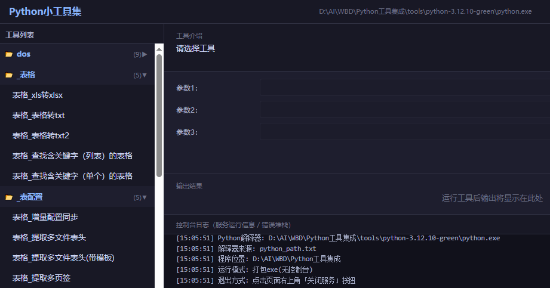

战斗公式
伤害、防御、增益的显式关系，调参即见结果，不留黑箱。
游戏数值策划 · 8 年 · 7 款研发项目
抽卡概率、养成数值、关卡难度——从公式建模到配表落地，再从线上数据回到手感校准。下面是代表作品与可玩的小游戏 Demo。
数值不是孤立的数字，是一套让游戏「好玩且公平」的系统。五条主线，我在同一张表里对齐。
战斗公式可解释、经济产销可闭环、成长节奏可预期、商业化可回本——四条线在同一张表里对齐，而不是各算各的。
伤害、防御、增益的显式关系，调参即见结果，不留黑箱。
主属性与衍生属性的映射，成长不溢出、不浪费。
产出、消耗、通胀的闭环模型，货币不过载。
数值区间与边界约束，强弱有度、可回归。
等级—战力曲线，让付费与肝度各得其所。
付费点与数值产出的咬合，回本可测算。
概率、成长与关卡，是数值的三个主战场。每个项目都走同一套流程：先建模，再配表、调试，最后用线上数据校准手感。
100 抽硬保底，70 抽后概率线性递增的软保底模型。全池期望 78.9 抽(0.1%基础率)，控制头部玩家付费深度的同时稳住中小 R 的体验。
强化成长、词条权重与养成节奏三维建模，长线投放不失控，中后期不溢出:
强化成长用几何级数 K^n 建模，K∈[1.06,1.12] 是每级乘子 ；
词条权重用加权类别抽样建模，靠权重分布 + 反堆叠控制期望与方差；
养成节奏靠「成本增长率 ρ > 战力增长率 K」让经济成为瓶颈，使总战力对资源投放呈亚线性依赖。
用连续概率替代硬判定，再叠三重修正，让"以弱胜强"可设计、分差可控。
成功率 = 1 / ( 1 + 10^(( 防守 − 进攻 ) / k) )
用"关卡卡点线"（章节 → 关卡 → 玩家/怪物卡等级曲线）锁定难度爬坡，再用"调整目标"做 模拟 / 运营投放前 / 运营投放后 三列对照，量化球员品质、强化等级、经验产出节奏目标。
即"投放前模拟预测 vs 投放后实测"的节奏验证闭环，可直接判断投放是否达预期、卡点是否过陡。
继《天命女神》项目创作。难度斜率、卡点密度与挫败感回收机制建模：卡点后用爽点补偿，配合动态软调，降低流失同时保住挑战感。
别人怎么做的，我看得懂也能复现。从代码与数据反推设计意图，把经验变成可迁移的方法。
别人怎么做的，我看得懂也能复现。从代码与数据反推设计意图，把经验变成可迁移的方法。
不是截图，是真能玩的数值。左边是我设计的抽卡保底模型的可玩版本，右边是随手写的小玩具。
参数可手动调整，试试你的欧气。
方向键或拖拽 / 滑动屏幕移动方块，合并到 2048。
键盘 ↑↓←→，或鼠标拖拽 / 手机触摸滑动
点击即玩！其中《灵境》属于个人研发创作产品，还在优化制作中。
根据体验需求建立公式模型，一通百通。
工具是数值能力的延伸。把计算验证做成可复现的闭环，而不是「一次性」道具。
复杂数学建模、多领域模拟，公式校验到完全正确。
Excel 输出保留公式而非硬编码数值。

结果异常先查工具与探针，再怀疑产物
优化前先跑真实数据，拿到反馈再动手。
跨版本逐字节对比，确认只有目标字段变化。